|
|
|
Открытие зимнего сезона 2006-2007 на Мамае День второй, тепло и солнечно, иду на Лесной, смотрю - фристайлеры разминаются ... 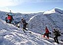 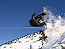 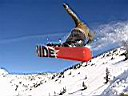 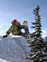 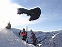 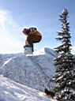 Самые популярные склоны в начале ноября - на Лесном пупыре. Сюда идут просто покататься и поучаствовать в соревнованиях. Как всегда, долю порядка в стихийное катание вносит Байкальский Экстрим. 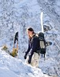 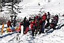 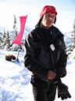 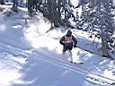 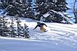 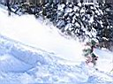 Отфотав веселые гонки между елок и покатавшись по трассе чемпионов фрирайда, пошли вдоль гребня на Двухглавую. В компании иркутян и улан-удэнцев полюбовались закатом и очень здорово открыли для себя новое и непаханное поле под вершиной. Уже в темноте выкатывали и искрили кантами о камни возле кунга. 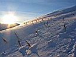 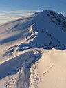 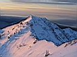 На ночь глядя ходил в цирк. Но не в тот, что под горой Мамай, а в тот, который возле кунга, который спонтанно организовался и продолжался всю ночь. Райдеры и огненная вода сделали свое дело - сезон был открыт на все 100%. Награждение победителей соревнований, музыка, ночное катание-валяние, расколбасы по Мазафакски и по Падонковски, и еще много-много всего веселого и интересного. Просто приходите на Мамай в следующем году 4 ноября и увидите :) 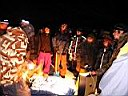 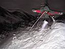 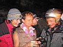 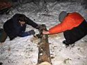 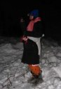 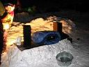
День третий ...
Ноябрь 2006. Белокрылов А.Ю. Слюдянка. |
Не перевелись на Мамае красивые елочки...
... и девушки :)
Тропа на Двухглавую вдоль гребня... ... навстречу с закатом |